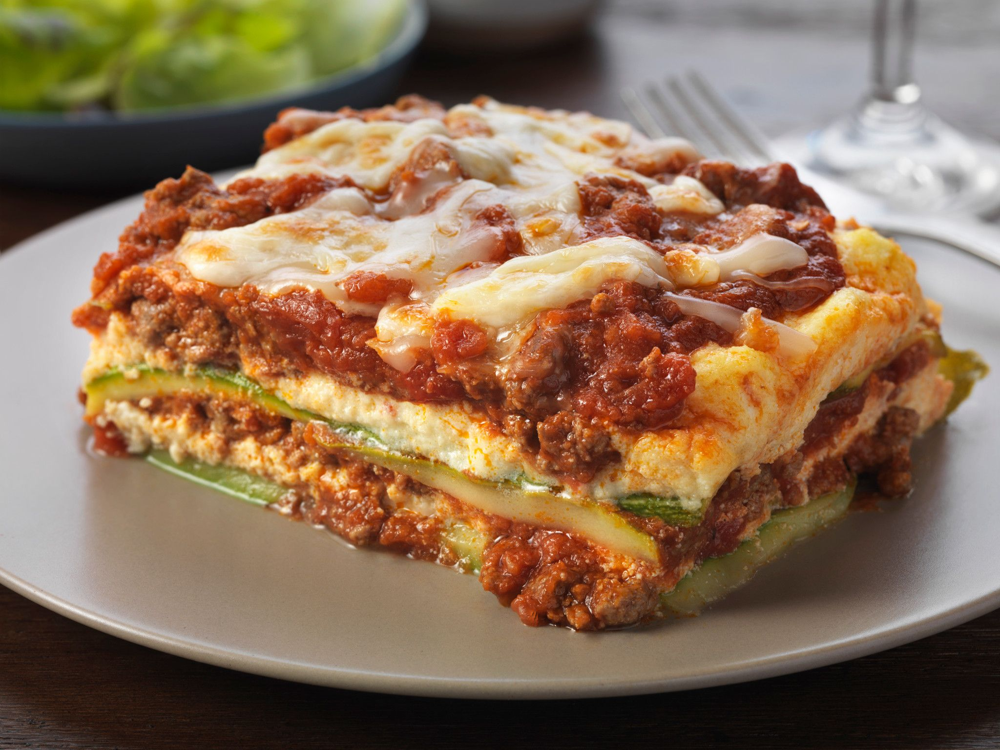

Zucchini lasagna recipe

Beautifully made keto lasagna to get everyone excited!
INGREDIENTS
- 1/12 zucchinis thinly slice
- 1 TBSP olive oil
- 1 pound ground beef
- 1 ½ cups low-carb marinara sauce
- 2 teaspoons salt, divided
- 1 teaspoon dried oregano
- ½ teaspoon ground black pepper
- 1 (8 ounce) container ricotta cheese
- 1 large egg
- ½ teaspoon ground nutmeg
- 2 cups shredded mozzarella cheese
- ¼ cup grated Parmesan cheese
DIRECTIONS
- Preheat the oven to 375 degrees F (190 degrees C). Grease an 8-inch baking dish with cooking spray.
- Pat dry zucchini slices with a paper towel to remove excess moisture. Set aside.
- Heat olive oil in a saucepan over medium-high heat. Add ground beef; cook until browned, 5 to 8 minutes.
- Add marinara sauce, 1 teaspoon salt, oregano, and pepper; simmer for 10 minutes. Set aside.
- Combine ricotta cheese, egg, 1 teaspoon salt, and nutmeg in a bowl; mix well. Set aside.
- Arrange one layer of zucchini slices in the prepared baking dish. Cover with 1/2 of the sauce. Add another layer of zucchini slices. Spread ricotta mixture on top. Sprinkle with 1/2 of the mozzarella cheese. Add another layer of zucchini slices; cover with remaining sauce and top with remaining mozzarella cheese and Parmesan cheese. Cover the baking dish with aluminum foil.
- Bake in the preheated oven for 30 minutes. Remove aluminum foil and bake until top is golden, about 15 minutes more.